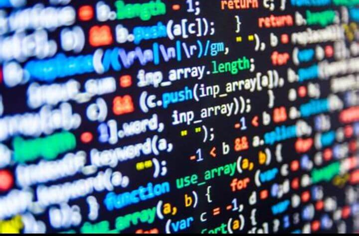

Les meilleurs langages de programmation à apprendre en 2024

Les meilleurs langages de programmation à apprendre en 2024
Apprendre un langage de programmation est essentiel pour réussir dans le domaine technologique. Voici une sélection des meilleurs langages à maîtriser en 2024, en fonction des tendances et des besoins du marché.
---
1. Python
Python reste l'un des langages les plus populaires grâce à sa simplicité et sa polyvalence.
Applications :
Intelligence artificielle, développement web, analyse de données et automatisation.Avantages :
Syntaxe facile à apprendre, communauté active et bibliothèques riches comme TensorFlow et Pandas.---
2. JavaScript
JavaScript est indispensable pour le développement web et les applications interactives.
Applications :
Sites web, applications front-end (React.js, Vue.js) et back-end (Node.js).Avantages :
Langage dynamique avec une forte demande sur le marché.---
3. Java
Langage robuste et polyvalent, Java est utilisé dans de nombreux domaines.
Applications :
Développement Android, applications d'entreprise et systèmes distribués.Avantages :
Sécurité, portabilité et large base d'utilisateurs.---
4. C++
C++ est idéal pour les projets nécessitant des performances élevées.
Applications :
Jeux vidéo, systèmes d'exploitation et logiciels embarqués.Avantages :
Contrôle complet sur le matériel et les ressources.---
5. Rust
Rust est connu pour sa sécurité et ses performances exceptionnelles.
Applications :
Systèmes critiques, développement web back-end et blockchain.Avantages :
Gestion de la mémoire sans compromis sur la sécurité.---
6. Kotlin
Kotlin est le langage officiel pour le développement Android.
Applications :
Applications mobiles et développement multiplateforme.Avantages :
Syntaxe moderne et compatibilité avec Java.---
7. Go (Golang)
Go est connu pour sa simplicité et ses performances dans le développement d'applications cloud.
Applications :
Microservices, outils de développement et plateformes cloud.Avantages :
Compilation rapide et gestion efficace des threads.---
Conclusion
Le choix du langage de programmation dépend de vos objectifs et des tendances du marché. Que vous soyez débutant ou développeur expérimenté, ces langages vous ouvriront des opportunités dans des domaines variés.